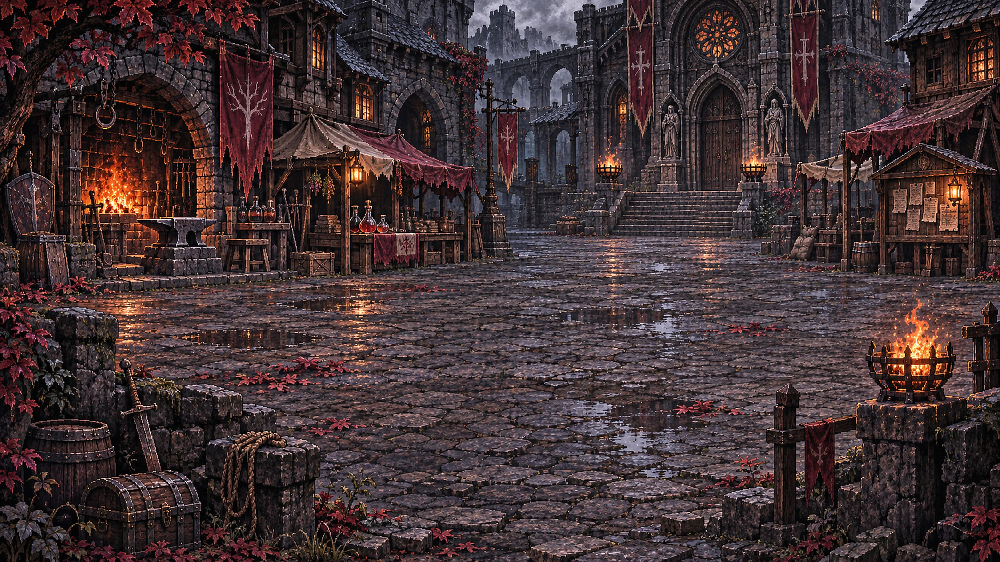
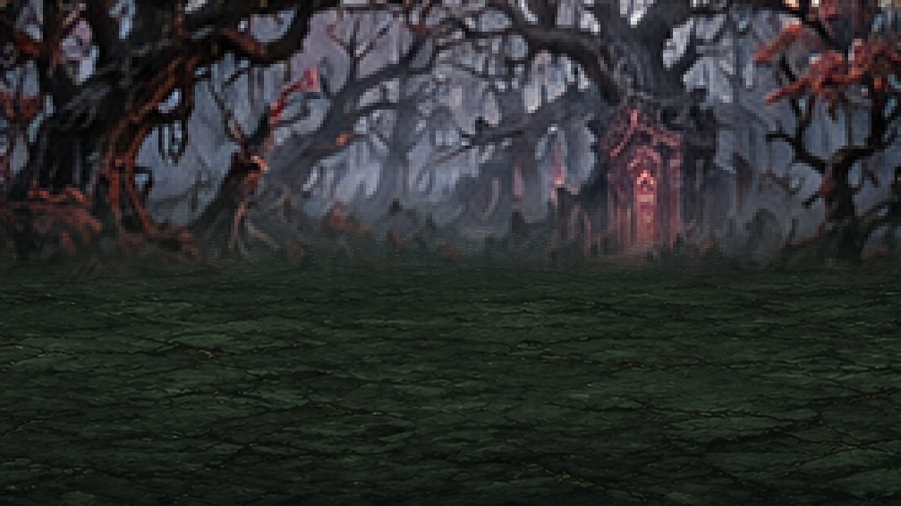
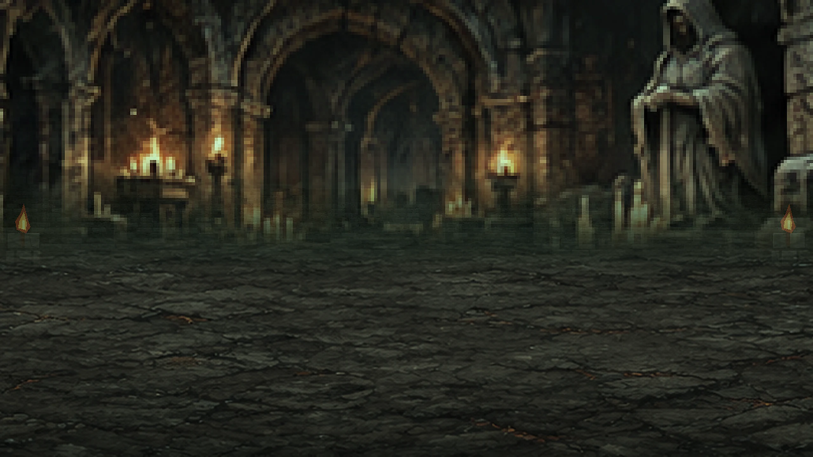

Vespera

Use WASD, as setas ou clique no chão para caminhar. Perto de um habitante, pressione E ou use Interagir para abrir o serviço. Voltar à cidade recupera a vida.
Caçadas e combate

Abra a Jornada e escolha uma região para iniciar uma caçada. O servidor calcula o combate e o progresso enquanto a atividade estiver ativa, inclusive com o jogo fechado.
Passe o cursor sobre uma habilidade ou selecione seu ícone pelo teclado para conferir custo, recarga e efeitos. Configure a ordem e as condições na janela de rotação. Confira abates, experiência e saque no Hunt Analyzer. Os drops que atingem o limite de raridade configurado aparecem em cartões no topo da tela, com o valor de venda e a chance quando disponível.
Expedições

Na janela de expedições, selecione a região e a dificuldade disponível. Confira os requisitos exibidos pelo jogo e prepare seu equipamento, habilidades e poções antes de iniciar.
Vocações e talentos
A vocação define o estilo de combate, o recurso utilizado e as habilidades disponíveis. Abra a ficha para ver seus atributos e pontos disponíveis. Na árvore de talentos, confira os efeitos e requisitos de cada nó antes de investir.
Equipamentos e runas
Confira os atributos, os efeitos e a raridade pelo tooltip da mochila. O contorno indica a raridade. O nome indica a procedência do equipamento, como a criatura, a cripta ou a oficina. Equipamentos antigos de caçada podem indicar apenas a região. Os encaixes no rodapé mostram onde você pode inserir runas e quais já foram inseridas. A opção de remover destrói a runa.
Desmantelar consome o equipamento e concede materiais e experiência de ferraria. O painel de resultados mostra o que entrou no estoque e permite consultar os detalhes dos materiais.
Poções e elixires
Na bolsa de consumíveis, consulte o estoque, o efeito e a recarga de cada frasco. Abra Vida ou Mana, marque a ativação e escolha a poção e o percentual. Salve a configuração. O HUD mostra a automação ativa e a recarga, calculada pelo servidor. Para desativar, desmarque a opção e salve novamente.
Coleta e ofícios
Selecione a atividade de coleta na Jornada. Minérios, madeira e ervas abastecem receitas e fabricação. Confira o tipo, o nível e a raridade do material pelo tooltip do inventário. As receitas exibem os ingredientes e custos de fabricação.
O painel de ofícios exibe o progresso em ferraria, alquimia, encantamento e joalheria. Desmantelar equipamento dá experiência de ferraria e materiais que podem voltar à produção.
Mercadora e mercado
A mercadora permite vender e desmantelar equipamentos em lote por raridade. Revise a seleção e a confirmação de itens valiosos antes de concluir. Ao vender um equipamento individualmente, consulte a recompra antes de fechar a mercadora.
No mercado entre jogadores, consulte anúncios, preços e seus itens anunciados. O equipamento anunciado fica reservado até a compra ou o cancelamento.